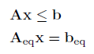
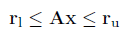
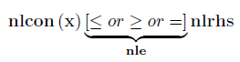
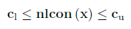

Constraint Forms
Inequality and equality constraints can be specified in one of two forms using OPTI.
Linear Constraints
|  | OR |  |
The general form of specifying linear constraints in OPTI is via individual matrices for inequalities and equalities (A, Aeq), and individual right hand side vectors (b, beq). An example via optiprob is shown below:
optiprob('ineq',A,b,'eq',Aeq,beq)
However a more efficient method is specifying all linear constraints via one matrix, A, and two vectors (rl, ru) to describe bounds on each row of A. The advantage is the ability to specify two inequalities on one line, one greater than equal to, and the other less than or equal to. An example via optiprob is shown below:
optiprob('lin',A,rl,ru)
To specify an equality constraint using the row method, simply specify the corresponding element in both rl and ru to the equality value.
OPTI accepts either format, and will internally convert to the format required by the solver being used. No overhead is required for either form during solving so use the format that suits you best.
Nonlinear Constraints
|  | OR |  |
The general form of specifying nonlinear constraints in OPTI is via a single function for all nonlinear constraints (nlcon), a vector of the right hand side (nlrhs) and a vector describing each type of constraint (nle). Each element in nle corresponds to a constraint type (-1 for ≤, 0 for =, 1 for ≥). An example via optiprob is shown below:
optiprob('nlmix',nlcon,nlrhs,nle)
However a more efficient method is specifying bounds on each constraint row via two vectors (cl, cu). The advantage is the ability to specify two inequalities on one line, one greater than equal to, and the other less than or equal to. An example via optiprob is shown below:
optiprob('nl',nlcon,cl,cu)
To specify an equality constraint using the row method, simply specify the corresponding element in both cl and cu to the equality value.
OPTI accepts either format, and will internally convert to the format required by the solver being used. Converting from general (mixed) form to row form is a simple conversion, as is from row to general form with only single bounds (each row contains only one inequality). Both of these situations require no overhead during solving.
However if you specify your nonlinear constraints in row form with dual bounds (two inequalities on one row) and OPTI is required to convert it to general form the overhead is substantially increased. Not only will the constraint function be modified, but also the Jacobian and Jacobian Structure (if specified) to accommodate the extra row(s).
Copyright © 2011-2013 Jonathan Currie (I2C2)